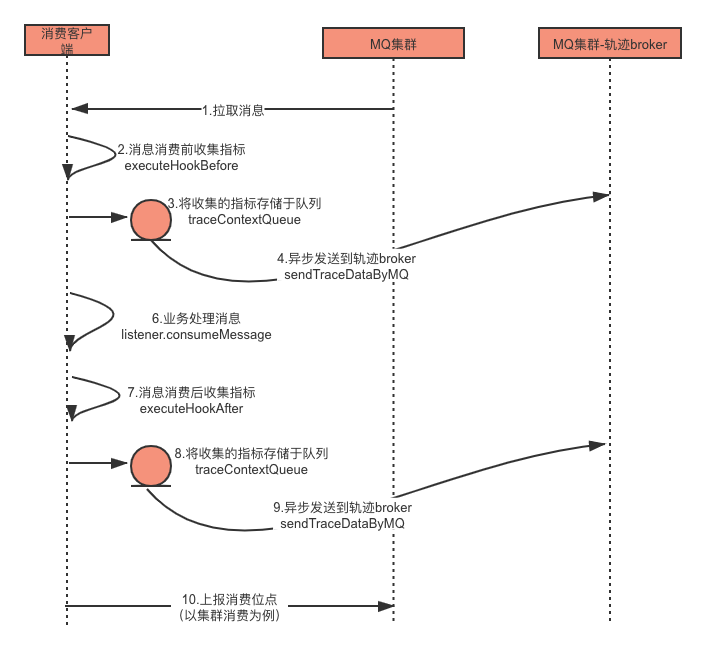
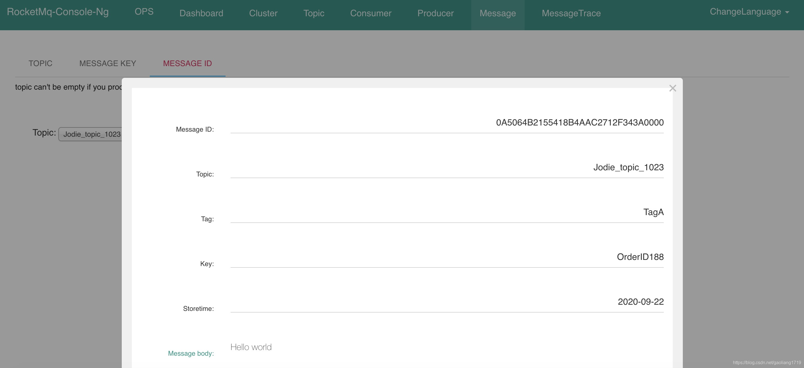

- 01 搭建学习环境准备篇.md.html
- 02 RocketMQ 核心概念扫盲篇.md.html
- 03 消息发送 API 详解与版本变迁说明.md.html
- 04 结合实际应用场景谈消息发送.md.html
- 05 消息发送核心参数与工作原理详解.md.html
- 06 消息发送常见错误与解决方案.md.html
- 07 事务消息使用及方案选型思考.md.html
- 08 消息消费 API 与版本变迁说明.md.html
- 09 DefaultMQPushConsumer 核心参数与工作原理.md.html
- 10 DefaultMQPushConsumer 使用示例与注意事项.md.html
- 11 DefaultLitePullConsumer 核心参数与实战.md.html
- 12 结合实际场景再聊 DefaultLitePullConsumer 的使用.md.html
- 13 结合实际场景顺序消费、消息过滤实战.md.html
- 14 消息消费积压问题排查实战.md.html
- 15 RocketMQ 常用命令实战.md.html
- 16 RocketMQ 集群性能摸高.md.html
- 17 RocketMQ 集群性能调优.md.html
- 18 RocketMQ 集群平滑运维.md.html
- 19 RocketMQ 集群监控（一）.md.html
- 20 RocketMQ 集群监控（二）.md.html
- 21 RocketMQ 集群告警.md.html
- 22 RocketMQ 集群踩坑记.md.html
- 23 消息轨迹、ACL 与多副本搭建.md.html
- 24 RocketMQ-Console 常用页面指标获取逻辑.md.html
- 25 RocketMQ Nameserver 背后的设计理念.md.html
- 26 Java 并发编程实战.md.html
- 27 从 RocketMQ 学基于文件的编程模式（一）.md.html
- 28 从 RocketMQ 学基于文件的编程模式（二）.md.html
- 29 从 RocketMQ 学 Netty 网络编程技巧.md.html
- 30 RocketMQ 学习方法之我见.md.html
- 捐赠
23 消息轨迹、ACL 与多副本搭建
消息轨迹
消息轨迹含义
一条消息什么时候由哪台机器产生的、发送的耗时、消息大小、发送状态、存储在哪个 Broker 上、什么时候存储的以及存储在哪台 Broker 上、什么时候消费的、消费状态等信息，这些信息即消息轨迹，用于追踪消息从诞生到被消费的整个生命周期。
这些信息对于业务同学排查定位有着重要的意义，发送和消费往往在不同的业务部门。有了消息轨迹后一条消息有没有发送，发送成功了没，有没有消费一目了然，降低了彼此的沟通成本。
消息轨迹使用
1. Broker 设置
RocketMQ 的默认消息轨迹功能默认是关闭的，可以将 Broker 属性 traceTopicEnable 设置为 true 开启。消息轨迹默认存储在 RMQ_SYS_TRACE_TOPIC 的主题中，可以通过 msgTraceTopicName 修改。
| 属性 | 默认参数 |
|---|---|
| traceTopicEnable | false |
| msgTraceTopicName | RMQ_SYS_TRACE_TOPIC |
2. 发送端使用
发送轨迹 API
public DefaultMQProducer(final String producerGroup, boolean enableMsgTrace, final String customizedTraceTopic){
this(null, producerGroup, null, enableMsgTrace, customizedTraceTopic);
}
说明：enableMsgTrace 是否开启发送轨迹，默认 false；customizedTraceTopic 设置收集消息轨迹的自定义主题，默认为 RMQ_SYS_TRACE_TOPIC。
发送代码示例
public static void main(String[] args) throws MQClientException, InterruptedException {
DefaultMQProducer producer = new DefaultMQProducer("ProducerGroupName",true);
producer.setNamesrvAddr("127.0.0.1:9876");
producer.start();
for (int i = 0; i < 1; i++)
try {
Message msg = new Message("TopicTest",
"TagA",
"OrderID111",
"Hello world".getBytes(RemotingHelper.DEFAULT_CHARSET));
SendResult sendResult = producer.send(msg);
System.out.printf("%s%n", sendResult);
} catch (Exception e) {
e.printStackTrace();
}
producer.shutdown();
}
说明：创建 DefaultMQProducer 时将 enableMsgTrace 设置为 true 开启发送消息轨迹。
3. 消费端使用
消费轨迹 API
public DefaultMQPushConsumer(final String consumerGroup, boolean enableMsgTrace, final String customizedTraceTopic) {
this(null, consumerGroup, null, new AllocateMessageQueueAveragely(), enableMsgTrace, customizedTraceTopic);
}
说明：enableMsgTrace 是否开启消费轨迹，默认 false；customizedTraceTopic 设置收集消息轨迹的自定义主题，默认为 RMQ_SYS_TRACE_TOPIC。
消费代码示例
public static void main(String[] args) throws InterruptedException, MQClientException {
DefaultMQPushConsumer consumer = new DefaultMQPushConsumer("CID_JODIE_1",true);
consumer.setNamesrvAddr("127.0.0.1:9876");
consumer.subscribe("TopicTest", "*");
consumer.setConsumeFromWhere(ConsumeFromWhere.CONSUME_FROM_FIRST_OFFSET);
consumer.setConsumeTimestamp("20181109221800");
consumer.registerMessageListener(new MessageListenerConcurrently() {
@Override
public ConsumeConcurrentlyStatus consumeMessage(List<MessageExt> msgs, ConsumeConcurrentlyContext context) {
System.out.printf("%s Receive New Messages: %s %n", Thread.currentThread().getName(), msgs);
return ConsumeConcurrentlyStatus.CONSUME_SUCCESS;
}
});
consumer.start();
System.out.printf("Consumer Started.%n");
}
说明：创建 DefaultMQPushConsumer 将 enableMsgTrace 设置为 true 开启消费消息轨迹。
4. 消息轨迹效果
通过发送和消费一条消息，在 RocketMQ-Console 中看下消息轨迹的效果截图。
发送消息内容
SendResult [sendStatus=SEND_OK, msgId=A9FE1075810A18B4AAC24A40738B0000, offsetMsgId=A9FE107500002A9F0000000000002147, messageQueue=MessageQueue [topic=TopicTest, brokerName=liangyong, queueId=1], queueOffset=2]
消费消息内容
Receive New Messages: [MessageExt [brokerName=liangyong, queueId=1, storeSize=189, queueOffset=2, sysFlag=0, bornTimestamp=1600135337872, bornHost=/169.254.16.117:65532, storeTimestamp=1600135337883, storeHost=/169.254.16.117:10911, msgId=A9FE107500002A9F0000000000002147, commitLogOffset=8519, bodyCRC=198614610, reconsumeTimes=0, preparedTransactionOffset=0, toString()=Message{topic='TopicTest', flag=0, properties={MIN_OFFSET=0, MAX_OFFSET=3, KEYS=OrderID111, CONSUME_START_TIME=1600135337915, UNIQ_KEY=A9FE1075810A18B4AAC24A40738B0000, WAIT=true, TAGS=TagA}, body=[72, 101, 108, 108, 111, 32, 119, 111, 114, 108, 100], transactionId='null'}]]
消息轨迹展现
在 RocketMQ 控制台，可以通过 message key 或者 message id 检索消息内容，如下图：

点击 MESSAGE TRACE DETAIL 可以查看消息轨迹，如下图：

消息轨迹原理
发送轨迹原理：在消息发送前与发送后收集指标信息，并将指标信息异步发送到轨迹主题。

消费轨迹原理：消费的消息轨迹有两部分，一部分在拉取消息后处理消息前收集指标异步发送都轨迹主题；另一部分处理消息后收集消息指标异步发送到轨迹主题。

轨迹格式说明
消息轨迹类型有三种，Pub 指发送轨迹，SubBefore 指消费前轨迹，SubAfter 指消费后轨迹。
发送轨迹 Pub
| 名称 | 说明 |
|---|---|
| TraceType | Pub 表示发送轨迹 |
| timeStamp | 存储时间 |
| regionId | 机房可用区，默认为 DefaultRegion（目前没有使用） |
| groupName | 生产者组 producerGroup |
| topic | 主题名称 |
| msgId | 消息 ID，由客户端生成 |
| tags | 消息 tag |
| keys | 消息 key |
| storeHost | 消息存储 Broker IP |
| bodyLength | 消息体大小 |
| costTime | 发送消息耗时 |
| msgType | 消息类型：普通消息（Normal_Msg）、事物半消息（Trans_Msg_Half）、 事物提交消息（Trans_msg_Commit）、延迟消息（Delay_Msg） |
| offsetMsgId | 消息 Id，由 Broker 生成 |
| isSuccess | 发送是否成功，true 表示成功、false 表示失败 |
消费前轨迹 SubBefore
| 名称 | 说明 |
|---|---|
| traceType | SubBefore 表示消费前轨迹 |
| timeStamp | 消息存储时间 |
| regionId | 机房可用区（目前未使用） |
| groupName | 消费组名称 |
| requestId | 请求标识 |
| msgId | 消息 Id |
| retryTimes | 重试次数 |
| keys | 消息 key |
消费前轨迹 SubAfter
| 名称 | 说明 |
|---|---|
| traceType | SubAfter 表示消费后轨迹 |
| requestId | 请求标识 |
| msgId | 消息 Id |
| costTime | 消费耗时 |
| isSuccess | 消费结果，true 消费成功、false 消费失败 |
| keys | 消息 key |
| contextCode | Broker 返回的消费状态，0:SUCCESS，1:TIME_OUT，2:EXCEPTION，3:RETURNNULL，4:FAILED |
消息轨迹结语
- 在生产环境中使用消息轨迹，可以将 MQ 集群的一台 Broker 用于收集消息轨迹，避免轨迹消息对集群性能造成影响。
- 开源版本的消息轨迹中缺少消费的 IP 信息，即：我们不能查询到消息被哪个机器消费掉了。
- 开源版本中的消息轨迹组织格式用 char 字符拼接，解析使用数组，扩展性和兼容性不太友好。
- 基于此两位作者负责的 RocketMQ 集群中均未开启轨迹功能。
ACL
ACL 含义
访问控制表（Access Control List，ACL）描述用户或角色对资源的访问控制权限，RocketMQ 中的 ACL 见下表说明。
RocketMQ 中的 ACL 含义说明：
| 含义 | 说明 |
|---|---|
| 用户 | 在 plain_acl.yml 配置文件用 accessKey 表示 |
| 角色 | admin 和其他角色 |
| 资源 | 包括主题和消费组 |
| 权限 | DENY 表示无权限 ANY 表示拥有 PUB 或者 SUB 权限 PUB 表示拥有主题发送权限 SUB 表示拥有消费组订阅权限 |
ACL 使用示例
将 aclEnable = true 添加到 Broker 配置文件中，另外添加 ${ROCKETMQ_HOME}/conf/plain_acl.yml 文件，用于 ACL 控制。
1. Broker 配置
brokerClusterName = DefaultCluster
brokerName = broker-a
brokerId = 0
deleteWhen = 04
fileReservedTime = 48
brokerRole = ASYNC_MASTER
flushDiskType = ASYNC_FLUSH
traceTopicEnable = true
aclEnable = true
说明
| 参数 | 含义 |
|---|---|
| aclEnable | 默认 false，开启 ACL 需要设置为 true |
| ROCKETMQ_HOME | 可以通过 -Drocketmq.home.dir 指定 MQ 根目录 |
| ACL fileName | 默认 /conf/plain_acl.yml，可以通过 -Drocketmq.acl.plain.file 指定 ACL 文件名称 |
2. plain_acl.yml 配置
ACL 配置文件由全局白名单配置（globalWhiteRemoteAddresses）和账户配置（accounts）两部分构成。
globalWhiteRemoteAddresses:
accounts:
- accessKey: RocketMQ
secretKey: 12345678
whiteRemoteAddress:
admin: false
defaultTopicPerm: DENY
defaultGroupPerm: SUB
topicPerms:
- TopicTes1=DENY
- TopicTest2=PUB|SUB
groupPerms:
- consumerTest=DENY
- accessKey: rocketmq2
secretKey: 12345678
whiteRemoteAddress: 192.168.1.*
admin: true
说明
| 参数 | 含义 |
|---|---|
| globalWhiteRemoteAddresses | 全局白名单配置，策略如下： 空：忽略白名单，继续执行下面校验 全匹配模式：全部放行不会执行后面校验 例如：* 或 ... 或 ::::::: 多 IP 模式：表示白名单 IP 在设置区间段的放行 例如：192.168.0.{1,2} 或 192.168.1.1,192.168.1.2 或 192.168.*. 或 192.168.1-10.5-50 |
| accessKey | 唯一用户标识 |
| secretKey | 访问密码 |
| whiteRemoteAddress | 用户级白名单，格式同 globalWhiteRemoteAddresses |
| admin | 是否为管理员，管理员拥有所有资源访问权限 |
| defaultTopicPerm | 默认主题权限，默认值 DENY |
| defaultGroupPerm | 默认消费组权限，默认值 DENY |
| topicPerms | 详细的主题权限 |
| groupPerms | 详细的消费组权限 |
3. ACL 发送示例
在上面的配置文件中，将 TopicTes1 设置了 DENY 权限，即禁止发送和消费；将 TopicTest2 设置成了 PUB|SUB 权限，即允许发送和订阅权限。下面例子尝试向主题 TopicTes1 发送消息，观察其是否可以成功。
禁止发送示例
public class AclSendTest {
private static final String ACL_ACCESS_KEY = "RocketMQ";
private static final String ACL_SECRET_KEY = "12345678";
public static void main(String[] args) throws MQClientException, InterruptedException {
producer();
}
public static void producer() throws MQClientException {
DefaultMQProducer producer = new DefaultMQProducer("ProducerGroupName", getAclRPCHook());
producer.setNamesrvAddr("127.0.0.1:9876");
producer.start();
for (int i = 0; i < 1; i++)
try {
{
Message msg = new Message("TopicTest1",
"TagA",
"OrderID188",
"Hello world".getBytes(RemotingHelper.DEFAULT_CHARSET));
SendResult sendResult = producer.send(msg);
System.out.printf("%s%n", sendResult);
}
} catch (Exception e) {
e.printStackTrace();
}
producer.shutdown();
}
static RPCHook getAclRPCHook() {
return new AclClientRPCHook(new SessionCredentials(ACL_ACCESS_KEY,ACL_SECRET_KEY));
}
}
禁止发送截图

禁止发送说明
用户 RocketMQ 向主题 TopicTes1 发送消息时抛出 AclException，拒绝访问，如果将代码中主题换成 TopicTes2，则可以发送成功，接着看下文。
4. ACL 消费示例
在上面的配置文件中，将 consumerTest 设置了 DENY 权限，即禁止消费消息。由于 TopicTes2 设置为允许发送，我们下面尝试向 TopicTes2 发送一条消息，consumerTest 订阅了 TopicTes2 观察其是否可以消费。
允许发送示例
public class AclSendTest {
private static final String ACL_ACCESS_KEY = "RocketMQ";
private static final String ACL_SECRET_KEY = "12345678";
public static void main(String[] args) throws MQClientException, InterruptedException {
producer();
}
public static void producer() throws MQClientException {
DefaultMQProducer producer = new DefaultMQProducer("ProducerGroupName", getAclRPCHook());
producer.setNamesrvAddr("127.0.0.1:9876");
producer.start();
for (int i = 0; i < 1; i++)
try {
{
Message msg = new Message("TopicTest2",
"TagA",
"OrderID188",
"Hello world".getBytes(RemotingHelper.DEFAULT_CHARSET));
SendResult sendResult = producer.send(msg);
System.out.printf("%s%n", sendResult);
}
} catch (Exception e) {
e.printStackTrace();
}
producer.shutdown();
}
static RPCHook getAclRPCHook() {
return new AclClientRPCHook(new SessionCredentials(ACL_ACCESS_KEY,ACL_SECRET_KEY));
}
}
允许发送结果
SendResult [sendStatus=SEND_OK, msgId=C0A800667FB218B4AAC2663AB66F0000, offsetMsgId=C0A8006600002A9F00000000000085EA, messageQueue=MessageQueue [topic=TopicTest2, brokerName=broker-a, queueId=0], queueOffset=2]
禁止消费示例
public class AclConsumeTest {
private static final String ACL_ACCESS_KEY = "RocketMQ";
private static final String ACL_SECRET_KEY = "12345678";
public static void main(String[] args) throws MQClientException, InterruptedException {
pushConsumer();
}
public static void pushConsumer() throws MQClientException {
DefaultMQPushConsumer consumer = new DefaultMQPushConsumer("consumerTest", getAclRPCHook(), new AllocateMessageQueueAveragely());
consumer.setNamesrvAddr("127.0.0.1:9876");
consumer.subscribe("TopicTest2", "*");
consumer.setConsumeFromWhere(ConsumeFromWhere.CONSUME_FROM_FIRST_OFFSET);
consumer.setConsumeTimestamp("20180422221800");
consumer.registerMessageListener(new MessageListenerConcurrently() {
@Override
public ConsumeConcurrentlyStatus consumeMessage(List<MessageExt> msgs, ConsumeConcurrentlyContext context) {
System.out.printf("%s Receive New Messages: %s %n", Thread.currentThread().getName(), msgs);
printBody(msgs);
return ConsumeConcurrentlyStatus.CONSUME_SUCCESS;
}
});
consumer.start();
System.out.printf("Consumer Started.%n");
}
static RPCHook getAclRPCHook() {
return new AclClientRPCHook(new SessionCredentials(ACL_ACCESS_KEY,ACL_SECRET_KEY));
}
private static void printBody(List<MessageExt> msg) {
if (msg == null || msg.size() == 0)
return;
for (MessageExt m : msg) {
if (m != null) {
System.out.printf("msgId : %s body : %s \n\r", m.getMsgId(), new String(m.getBody()));
}
}
}
}
禁止消费截图

禁止消费说明
我们向 TopicTest2 成功发送了一条消息，但由于消费组 consumerTest 被设置成禁止消费，所有未能收到该消息。
ACL 命令汇总
RocketMQ 提供了一系列命令动态更新 Acl 配置文件，使设置的权限及时生效。
1. 获取 ACL 配置版本
使用 clusterAclConfigVersion 命令查看版本信息。
参数说明
| 参数 | 说明 |
|---|---|
| -b | Broker 地址，更新特定的 Broker |
| -c | 集群名称，更新集群中的所有 Broker |
| -n | namesrv 地址 |
命令示例
$ bin/mqadmin clusterAclConfigVersion -n x.x.x.x:9876 -c DefaultCluster
RocketMQLog:WARN No appenders could be found for logger (io.netty.util.internal.PlatformDependent0).
RocketMQLog:WARN Please initialize the logger system properly.
#Cluster Name #Broker Name #Broker Addr #AclConfigVersionNum #AclLastUpdateTime
DefaultCluster broker-a x.x.x.x:10911 0 2020-09-20 22:42:59
get cluster's plain access config version success.
2. 获取 Acl 权限配置
使用 getAccessConfigSubCommand 获取 ACL 的配置信息。
参数说明
| 参数 | 说明 |
|---|---|
| -b | Broker 地址，更新特定的 Broker |
| -c | 集群名称，更新集群中的所有 Broker |
| -n | namesrv 地址 |
命令示例
$ bin/mqadmin getAccessConfigSubCommand -n x.x.x.x:9876 -c DefaultCluster
RocketMQLog:WARN No appenders could be found for logger (io.netty.util.internal.PlatformDependent0).
RocketMQLog:WARN Please initialize the logger system properly.
globalWhiteRemoteAddresses: [10.10.103.*, 192.168.0.*]
accounts:
accessKey : RocketMQ
secretKey : 12345678
whiteRemoteAddress:
admin : false
defaultTopicPerm : DENY
defaultGroupPerm : SUB
topicPerms : [topicA=DENY, topicB=PUB|SUB, topicC=SUB]
groupPerms : [groupA=DENY, groupB=PUB|SUB, groupC=SUB]
accessKey : rocketmq2
secretKey : 12345678
whiteRemoteAddress: 192.168.1.*
admin : true
defaultTopicPerm :
defaultGroupPerm :
topicPerms :
groupPerms :
3. 更新全局白名单
使用 updateGlobalWhiteAddr 对 ACL 的全局白名单 globalWhiteRemoteAddresses 进行变更。
参数说明
| 参数 | 说明 |
|---|---|
| -b | Broker 地址，更新特定的 Broker |
| -c | 集群名称，更新集群中的所有 Broker |
| -n | namesrv 地址 |
| -g | 全局白名单值，例如：10.10.103.,192.168.0. |
命令示例
$ bin/mqadmin updateGlobalWhiteAddr -n x.x.x.x:9876 -c DefaultCluster -g 10.10.113.*,192.168.20.*
RocketMQLog:WARN No appenders could be found for logger (io.netty.util.internal.PlatformDependent0).
RocketMQLog:WARN Please initialize the logger system properly.
update global white remote addresses to x.x.x.x:10911 success.
查看生效
$ bin/mqadmin getAccessConfigSubCommand -n x.x.x.x:9876 -c DefaultCluster
RocketMQLog:WARN No appenders could be found for logger (io.netty.util.internal.PlatformDependent0).
RocketMQLog:WARN Please initialize the logger system properly.
globalWhiteRemoteAddresses: [10.10.113.*, 192.168.20.*]
accounts:
accessKey : RocketMQ
secretKey : 12345678
whiteRemoteAddress:
admin : false
defaultTopicPerm : DENY
defaultGroupPerm : SUB
topicPerms : [topicA=DENY, topicB=PUB|SUB, topicC=SUB]
groupPerms : [groupA=DENY, groupB=PUB|SUB, groupC=SUB]
accessKey : rocketmq2
secretKey : 12345678
whiteRemoteAddress: 192.168.1.*
admin : true
defaultTopicPerm :
defaultGroupPerm :
topicPerms :
groupPerms :
说明：全局白名单已经被更新。
4. 更新用户配置
对于用户账户的配置的变更通过 updateAclConfig 来实现。
参数说明
| 参数 | 说明 |
|---|---|
| -a | 指定 accessKey，变更哪个用户的配置 |
| -b | Broker 地址，更新特定的 Broker |
| -c | 集群名称，更新集群中的所有 Broker |
| -n | namesrv 地址 |
| -g | 设置 groupPerms 消费组权限，格式为：groupD=DENY,groupD=SUB |
| -i | 设置 Acl 文件中 defaultTopicPerm 权限 |
| -m | 设置 Acl 文件中 admin 权限 |
| -s | 设置 Acl 文件中 secretKey 密钥值 |
| -t | 设置 topicPerms 主题权限，格式为：topicA=DENY,topicD=SUB |
| -u | 设置 Acl 文件中的默认消费组 defaultGroupPerm 权限 |
| -w | 设置 Acl 文件中该用户下的白名单权限 whiteRemoteAddress |
命令示例
$ bin/mqadmin updateAclConfig -n x.x.x.x:9876 -c DefaultCluster -a RocketMQ -s 87654321 -t testTopicA=DENY,testTopicb=SUB
RocketMQLog:WARN No appenders could be found for logger (io.netty.util.internal.PlatformDependent0).
RocketMQLog:WARN Please initialize the logger system properly.
create or update plain access config to x.x.x.x:10911 success.
查看生效
$ bin/mqadmin getAccessConfigSubCommand -n uat-mq2.ttbike.com.cn:9876 -c DefaultCluster
RocketMQLog:WARN No appenders could be found for logger (io.netty.util.internal.PlatformDependent0).
RocketMQLog:WARN Please initialize the logger system properly.
globalWhiteRemoteAddresses: [10.10.113.*, 192.168.20.*]
accounts:
accessKey : rocketmq2
secretKey : 12345678
whiteRemoteAddress: 192.168.1.*
admin : true
defaultTopicPerm :
defaultGroupPerm :
topicPerms :
groupPerms :
accessKey : RocketMQ
secretKey : 87654321
whiteRemoteAddress:
admin : false
defaultTopicPerm : DENY
defaultGroupPerm : SUB
topicPerms : [testTopicA=DENY, testTopicb=SUB]
groupPerms : [groupA=DENY, groupB=PUB|SUB, groupC=SUB]
说明：用户 RocketMQ 的密钥 secretKey 和主题权限 topicPerms 已变更生效。
5. 删除用户配置
通过 deleteAccessConfig 删除指定用户的 ACL 配置信息。
参数说明
| 参数 | 说明 |
|---|---|
| -b | Broker 地址，更新特定的 Broker |
| -c | 集群名称，更新集群中的所有 Broker |
| -n | namesrv 地址 |
| -a | 指定特定用户 accessKey |
命令示例
$ bin/mqadmin deleteAccessConfig -n x.x.x.x:9876 -c DefaultCluster -a RocketMQ
RocketMQLog:WARN No appenders could be found for logger (io.netty.util.internal.PlatformDependent0).
RocketMQLog:WARN Please initialize the logger system properly.
delete plain access config account to x.x.x.x:10911 success.
查看生效
$ bin/mqadmin getAccessConfigSubCommand -n x.x.x.x:9876 -c DefaultCluster
RocketMQLog:WARN No appenders could be found for logger (io.netty.util.internal.PlatformDependent0).
RocketMQLog:WARN Please initialize the logger system properly.
globalWhiteRemoteAddresses: [10.10.113.*, 192.168.20.*]
accounts:
accessKey : rocketmq2
secretKey : 12345678
whiteRemoteAddress: 192.168.1.*
admin : true
defaultTopicPerm :
defaultGroupPerm :
topicPerms :
groupPerms :
说明：用户 RocketMQ 的相关 Acl 配置已被全部删除。
ACL 原理简述
1. 规则加载
规则配置在 plain_acl.yml 文件中，需要加载到 Broker 缓存中使其生效。启动时会加载 acl 文件的内容，当其变更了也需要动态加载规则内容，详见如下流程。

2. 权限校验
注册的钩子程序通过 NettyServerHandler 实现，在 Broker 当前的 channel 接收到客户端消息时执行校验逻辑，入口为 NettyServerHandler#channelRead0() 以及 processRequestCommand#doBeforeRpcHooks。规则校验的入口位于 PlainAccessValidator#validate 方法，下面是校验简图。

ACL 结语
- 评估是否需要 ACL 通常大部分场景是不需要的，如果对数据敏感可以通过对内容加密实现。
- 如果几千个资源（主题和消费组）都配置了 ACL 那么配置文件是庞大的。
- 如果要用建议局部使用，比如：资金往来的主题、消费组等。
- 基于此两位作者负责的 RocketMQ 集群均未开启 ACL 功能。
多副本搭建
多副本意义
RocketMQ 开源版本在 4.5.0 版本开始支持多副本（DLedger），在以前的版本中只支持主从模式。
主从模式存在的问题：
- 如果主节点挂掉了不能动态切换到从节点，这一组 Broker 节点不能提供写入服务；
- 设置主从异步复制模式时，如果主节点意外挂掉，数据可能没有全部复制到从节点，存在数据丢失风险。
多副本使用 Raft 协议在节点意外掉线后能够完成自动选主，提高集群的高可用和保证数据的一致性。
多副本搭建
由于 DLedger 基于 Raft 协议开发的功能，需要过半数选举，最少 3 个节点组成一个 Raft 组。
broker-n0.conf
brokerClusterName = RaftCluster
brokerName=RaftNode00
listenPort=30911
namesrvAddr=127.0.0.1:9876
storePathRootDir=/tmp/rmqstore/node00
storePathCommitLog=/tmp/rmqstore/node00/commitlog
enableDLegerCommitLog=true
dLegerGroup=RaftNode00
dLegerPeers=n0-127.0.0.1:40911;n1-127.0.0.1:40912;n2-127.0.0.1:40913
### must be unique
dLegerSelfId=n0
sendMessageThreadPoolNums=16
broker-n1.conf
brokerClusterName = RaftCluster
brokerName=RaftNode00
listenPort=30921
namesrvAddr=127.0.0.1:9876
storePathRootDir=/tmp/rmqstore/node01
storePathCommitLog=/tmp/rmqstore/node01/commitlog
enableDLegerCommitLog=true
dLegerGroup=RaftNode00
dLegerPeers=n0-127.0.0.1:40911;n1-127.0.0.1:40912;n2-127.0.0.1:40913
### must be unique
dLegerSelfId=n1
sendMessageThreadPoolNums=16
broker-n2.conf
brokerClusterName = RaftCluster
brokerName=RaftNode00
listenPort=30931
namesrvAddr=127.0.0.1:9876
storePathRootDir=/tmp/rmqstore/node02
storePathCommitLog=/tmp/rmqstore/node02/commitlog
enableDLegerCommitLog=true
dLegerGroup=RaftNode00
dLegerPeers=n0-127.0.0.1:40911;n1-127.0.0.1:40912;n2-127.0.0.1:40913
### must be unique
dLegerSelfId=n2
sendMessageThreadPoolNums=16
启动三个节点：
nohup bin/mqbroker -c conf/dledger/broker-n0.conf &
nohup bin/mqbroker -c conf/dledger/broker-n1.conf &
nohup bin/mqbroker -c conf/dledger/broker-n2.conf &
查看是否启动成功：
$ bin/mqadmin clusterList -n localhost:9876
RocketMQLog:WARN No appenders could be found for logger (io.netty.util.internal.PlatformDependent0).
RocketMQLog:WARN Please initialize the logger system properly.
#Cluster Name #Broker Name #BID #Addr #Version #InTPS(LOAD) #OutTPS(LOAD) #PCWait(ms) #Hour #SPACE
RaftCluster RaftNode00 0 x.x.x.x:30921 V4_7_0 0.00(0,0ms) 0.00(0,0ms) 0 444663.49 -1.0000
RaftCluster RaftNode00 1 x.x.x.x:30911 V4_7_0 0.00(0,0ms) 0.00(0,0ms) 0 444663.49 -1.0000
RaftCluster RaftNode00 3 x.x.x.x:30931 V4_7_0 0.00(0,0ms) 0.00(0,0ms) 0 444663.49 -1.0000
说明：BID 为 0 表示表示 Master，其他两个均为 Follower。
控制台截图：

查看发送消息：

说明：通过以上步骤，我们完成多副本的搭建过程。
重新选主
我们通过 kill 掉 Master 的方式来验证 DLedger 选主情况，上面的 clusterList 截图中我们看到 Master 为 x.x.x.x:30921，将该进程 kill 掉后观察一下。
$ bin/mqadmin clusterList -n localhost:9876
RocketMQLog:WARN No appenders could be found for logger (io.netty.util.internal.PlatformDependent0).
RocketMQLog:WARN Please initialize the logger system properly.
#Cluster Name #Broker Name #BID #Addr #Version #InTPS(LOAD) #OutTPS(LOAD) #PCWait(ms) #Hour #SPACE
RaftCluster RaftNode00 0 x.x.x.x:30931 V4_7_0 0.00(0,0ms) 0.00(0,0ms) 0 444664.03 -1.0000
RaftCluster RaftNode00 1 x.x.x.x:30911 V4_7_0 0.00(0,0ms) 0.00(0,0ms) 0 444664.03 -1.0000
说明：kill 掉原 Master 后，完成自动选主，新的 Master 为 x.x.x.x:30931。
参数说明
配置文件中多副本的参数说明见下面表格。
| 参数 | 说明 |
|---|---|
| enableDLegerCommitLog | 是否启用 DLedger，默认 false |
| dLegerGroup | 节点所属的 Raft 组，建议与 broker 一致 |
| dLegerPeers | 集群节点信息，示例：n0-127.0.0.1:40911;n1-127.0.0.1:40912;n2-127.0.0.1:40913 |
| dLegerSelfId | 当前节点 id。取自 legerPeers 中条目的开头，即上述示例中的 n0，并且特别需要强调，只能第一个字符为英文，其他字符需要配置成数字 |
参考资料
Raft 的学习资料见下面链接，供学习使用。DLedger 的源码解读，见《RocketMQ 技术内幕》第二版。
多副本结语
使用多副本时，请做好压测，压测的 TPS 是否满足业务的需求，作者曾做过多副本压测与主从异步的 TPS 有相当大的差距。
在 TPS 满足的情况下，建议使用多副本架构，尤其是支付类可以优先使用。
如果线上已经存在了主从默认的架构如何升级到 DLedger 模式呢？
- 可以参考前面平滑扩所容的方式，将多副本组成的 Raft 组加入到原集群中
- 关闭原主从架构节点的写入权限
- 在过了日志存储时间后，将主从架构节点下线
© 2019 - 2023 Liangliang Lee. Powered by gin and hexo-theme-book.